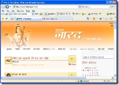
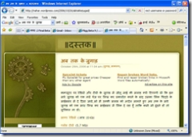
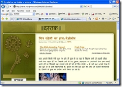

अपने जीतू जुगाड़ी यानि जीतू भाई पता नहीं इतनी उर्जा कहाँ से इकट्ठी कर लेते हैं, अपनी नौकरी के अलावा खजाना, नारद आदि का संचालन करना, अच्छे अच्छे जुगाड इकट्ठे करना और अपने चिट्ठे भी लिखना। इन दिनों जिस हिसाब से नये चिट्ठाकारों की बाढ़ आई है नारद को अकेले दम पर चलाना कोई मामूली बात नहीं है। भाई चाचा चौधरी जी हमें भी बताईये अपनी उर्जा का राज। चलिये कान में कह दीजिये हम किसी को नहीं बतायेंगे। 
अब देखिये पहले तो नारद में हिट्स का मीटर लगाया और अब उसे नई डिजाईन में बदल दिया जिससे नारद पहले से काफी सुंदर लगने लगा है।


और कल पाँच सवालों के जवाब ढूंढ़ते समय अपने पुराने लेखों को देखते समय वर्ड प्रेस के चिट्ठों पर गूगल के एडसेन्स विज्ञापनों पर भी नजर पड़ी, देखिये



